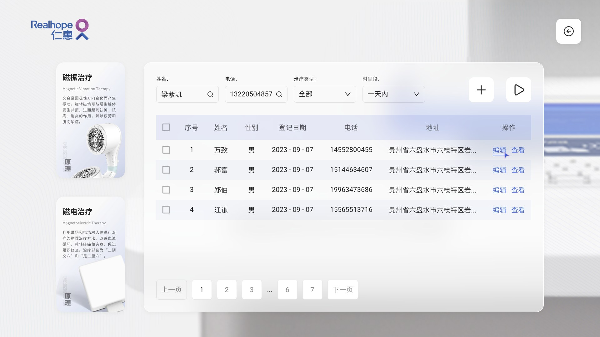
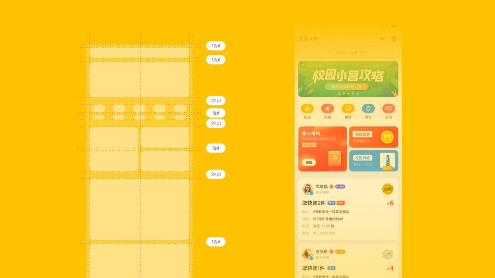
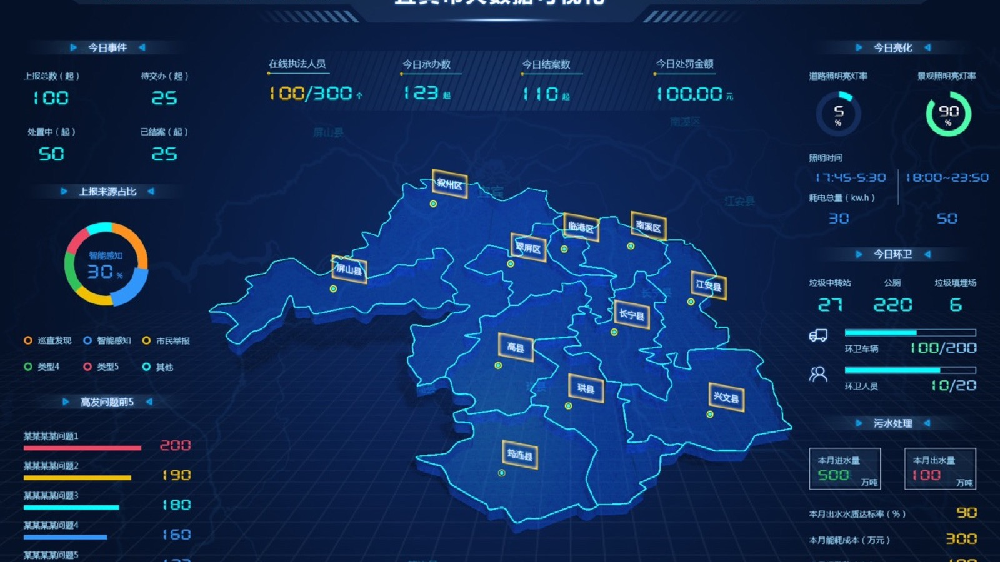
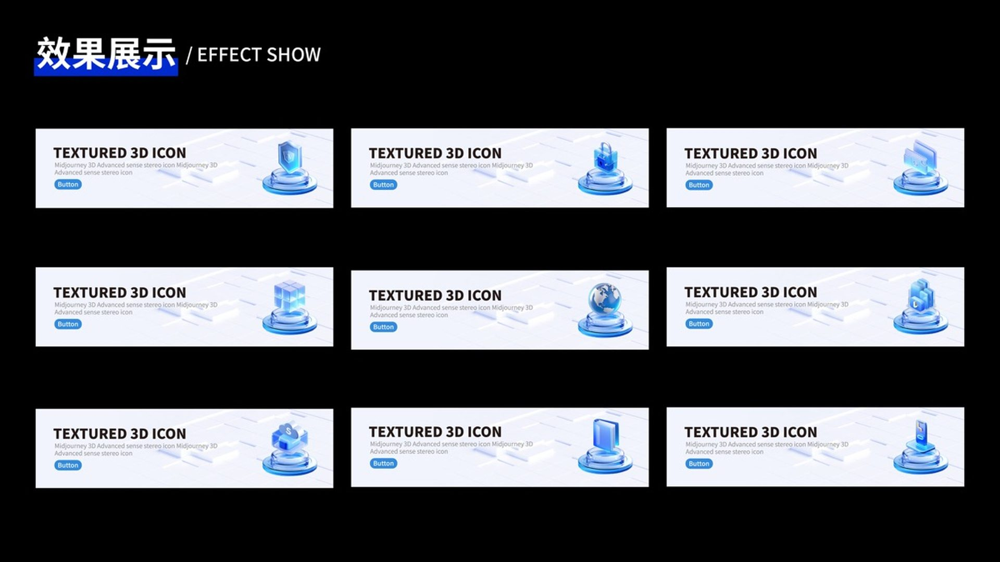

About me
I'm a UI/UX designer with 11 years of experience, working mostly on complex systems, data visualization and design systems. Much of my work is turning complicated workflows and dense information into interfaces people can understand and use with confidence. I pay close attention to information structure, interaction details, and whether a design holds up in real situations.
Contact Me